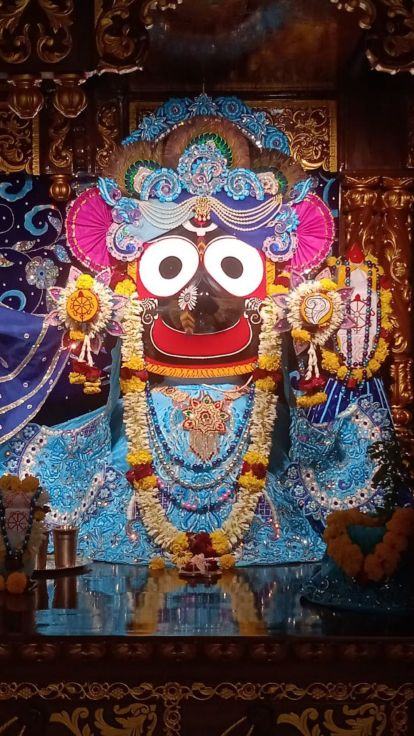

Oh Lord you have mercifully appeared in the land of Thane
Posted on : 31st October, 2024

Oh Lord you have mercifully appeared in the land of Thane to bless the fallen souls, only for the desire of Srila Prabhupād, your dear most devotee, when he was a small kid he organized your small ratha yātra and pulled you to his heart and the common man's heart. Only by his desire you have appeared prabhu. HH loknath Mahārāj also recalled that His divine grace Srila Prabhupād wanted to inaugurate the juhu temple on the day of Dussehra but due to some sickness he couldn't, but oh dear Lord by appearing in ISKCON thane temple on the same day of dussehra you actually fulfilled srila Prabhupād's Desire. And made us an instrument in fulfilling this holy event. Srila Prabhupād connects us to you and you connected us to srila Prabhupād, how will I ever understand this play of mercy prabhu?.
~Admin